记一次失败的Weblogic IIOP Gadget挖掘
前记
当时以为挖成功了，结果后来发现是少打了一个补丁，在朋友圈虚晃了一枪。不过整个利用思路还算有趣，这并不妨碍在这里分享一下。
sink点可行性验证
开局风干师傅送了个sink点。
我们先来分析一下sink点com.tangosol.coherence.transaction.internal.storage.KeyBackingMap#put的可行性。
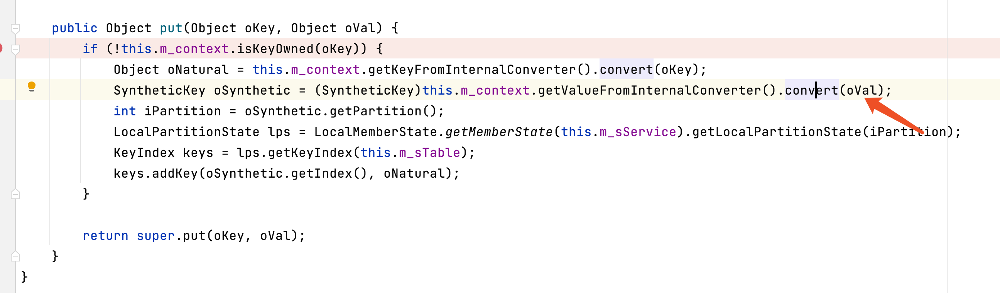
如果这里this.m_context是ReplicatedCache$BackingMapContext，反序列化的时候会进入BackingMapContext#getValueFromInternalConverter再进入getConverterFromInternal。
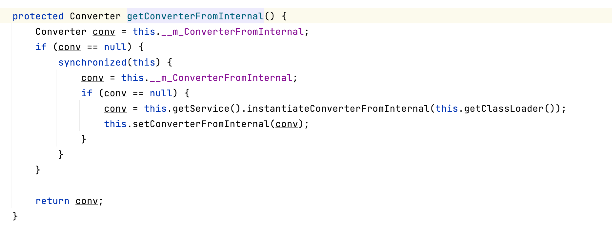
因为this.__m_ConverterFromInternal为transient在反序列的时候为空，根据代码逻辑反序列化的时候会创一个新的converter，并调用convert方法转换受控的oVal的对象。
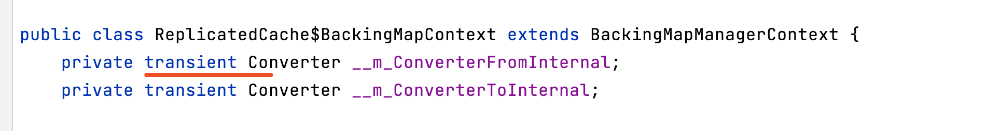
我们继续跟进，看一下converter是什么样子的, converter类型固定ReplicatedCache$ConverterFromInternal。
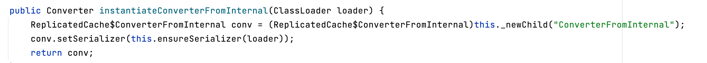
ReplicatedCache$ConverterFromInternal的convert。
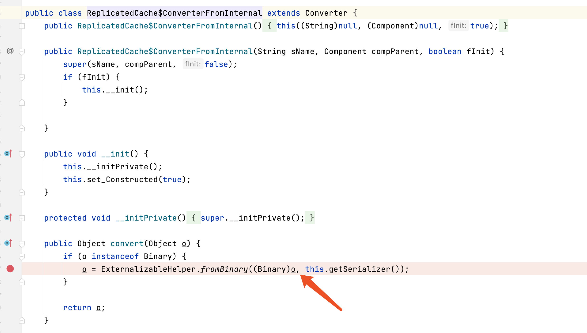
是不是很眼熟？没错，是我去年挖weblogic的时候找到的sink点, 二阶反序列化类型。
补全gadget
那么现在需要从source点找一条通路，放入常见的source点自动化跑，无奈工具太菜，大海捞针。捞到一个，应该还有其他的，我没一个一个看了。
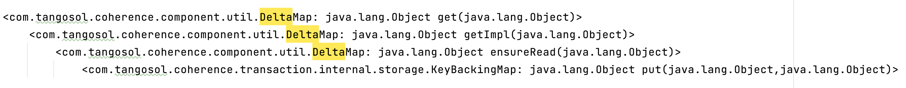
接下来再用BadAttributeValueExpException前半段就完全走通了。
构造exp与javaassit的妙用
路径找到了接着，就是填充一些必要的条件，构造payload了。
构造的时候会发现对com.tangosol.coherence.component.util.daemon.queueProcessor.Service有依赖。这个类是实现了Serializable接口的，但是官方的本意是不想让它被序列化的，
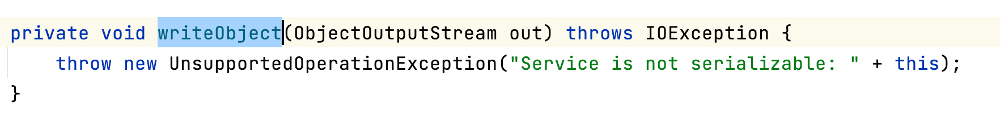
不过在反序列化的时候，并没有做对应的检查。所以我们用javaassit强行把这个方法改成$1.defaultWriteObject();
类似的，javaassit的妙用还可以减轻构造payload时候的痛苦，我们可以审计一部分代码，用javaassit把没用的逻辑阉割掉。
例如KeyBackingMap构造方法中
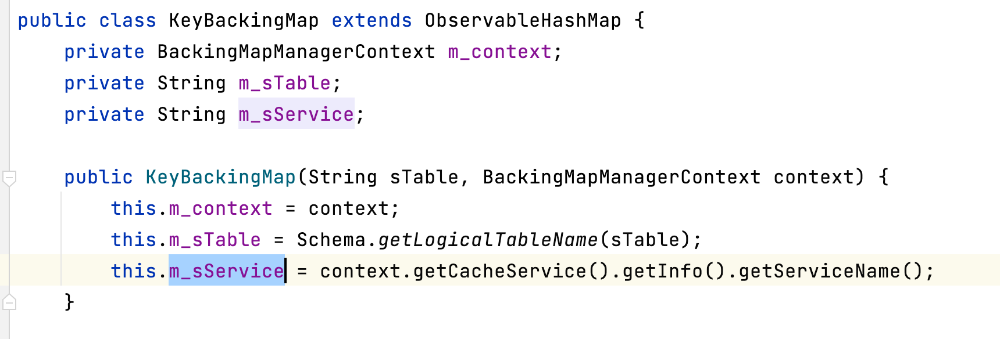
context.getCacheService().getInfo().getServiceName(), 一波连环夺命call要正常运行需要各种补全条件，一波操作就为了拿一个没什么卵用的字符串。
山穷水尽疑无路
至此一切都在向好的方向发展，首先我用没打补丁weblogic走了一波t3，一发入魂，稳稳的。打上最新补丁后走t3没成功，看报错想起了是去年oracle给t3加了一个ABBREV_CLASSES白名单。
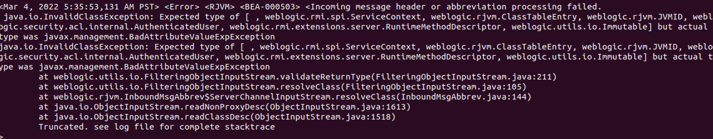
但是没有关系，我们还可以用iiop重拳出击。长久以来我一直觉得t3和iiop是等价的东西，exp走t3成功，那走iiop也可成功，因此一直觉得官方单独给t3加白的操作不多余但没必要。
直到打完发现没成功，这下有点傻眼了。
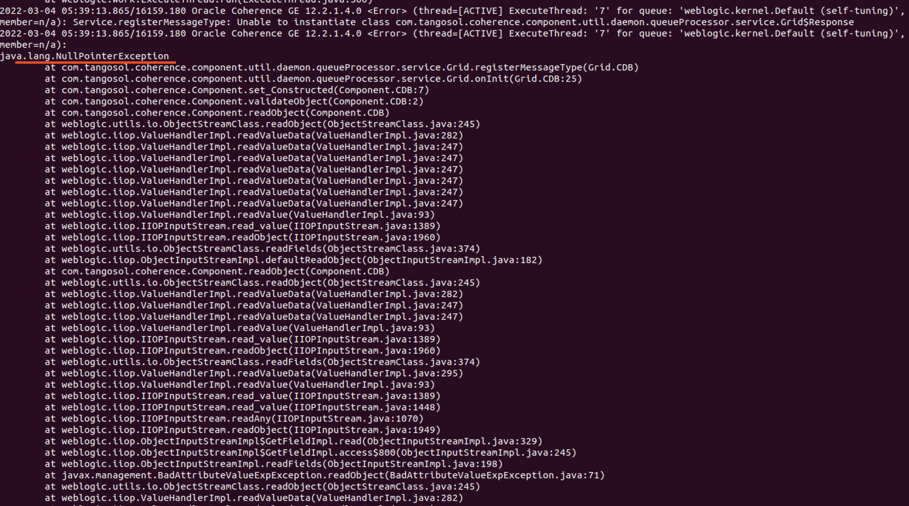
看起来iiop和t3在反序列化的时候还是有不同。根据调用栈和调试可以定位到出错registerMessageType中的getMessageClassMap。
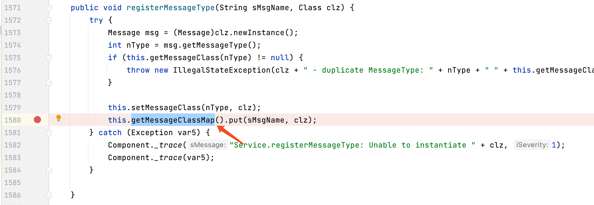
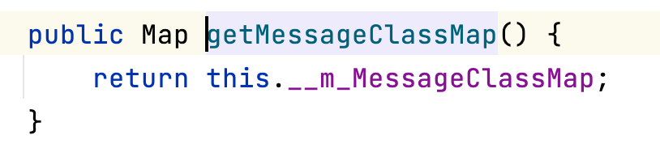)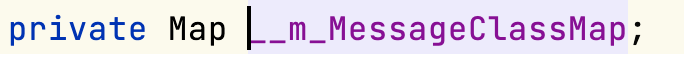
看到这里你可能充满疑惑
- 反序列化不是可以控制任意成员变量（不严谨）吗？提前给__m_MessageClassMap设置好，不就可以规避空指针的问题？
- 为什么t3的时候没有遇到这个问题？
这里限于篇幅，我就直接说我调试的结论了。
关于第一个问题，确实可以控制，但是这里涉及反序列化时序的问题，就算设置了__m_MessageClassMap，逻辑走到这一步的时候成员变量还没有被赋值。
关于第二个问题，是因为走iiop时，反序列化Component时registerVaildation调用抛出异常了，进入了t3情况下不会进入的validateObject。
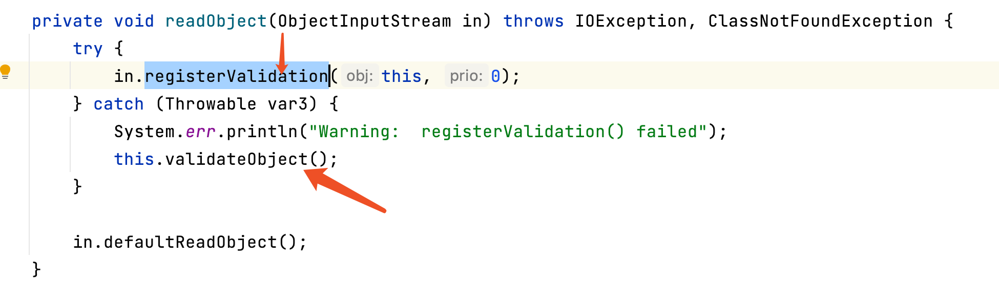
而出现异常的原因是也就是depth为0。
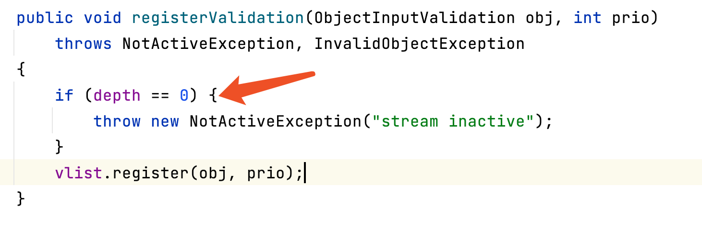
通常情况下depth会随着反序列化时的深度动态变化，因此我猜开发的本意是禁止Component成为最外层的对象。
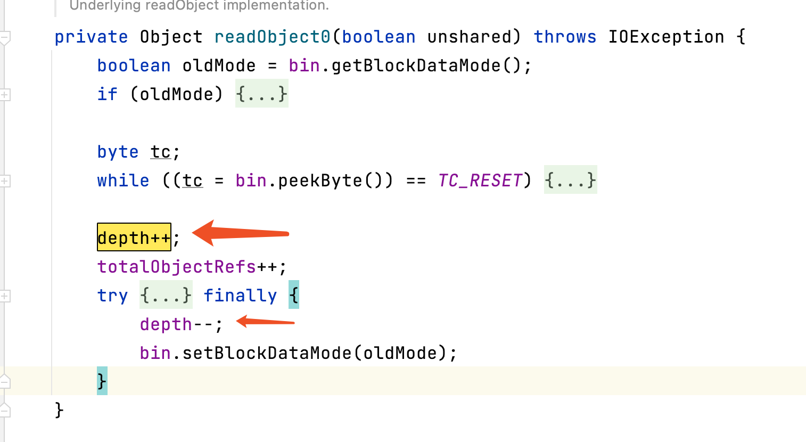
但是IIOP因为自身实现的原因，进入了readObjectOverride，从始至终都没有进入readObject0。也就说整个过程depth一直为0。
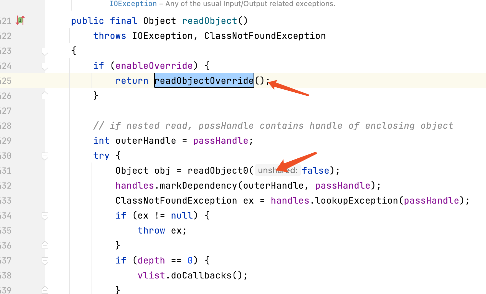
至此情况变得很难受。t3白名单打不了，iiop因为这个gadget依赖了特殊的类也打不了。功败垂成，我当时觉得非常可惜。又折腾一会找不到替代类就放弃了。
柳岸花明又一村
大约过了三周之后，我又想起了这个洞，突然eureka。既然正常流能打iiop不能打，那能不能把iiop“转换”成正常流然后再打呢？
其实通过查看历史漏洞可以知道CVE-2016-3510就可以做到这一点。
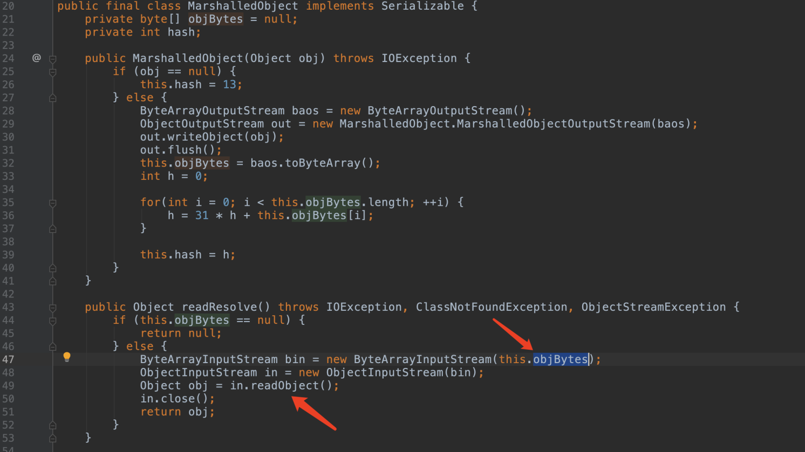
至此，全链路已经打通。
为什么失败
交给官方之后被驳回了，后来发现测试的时候少了一个补丁。
打补丁前：
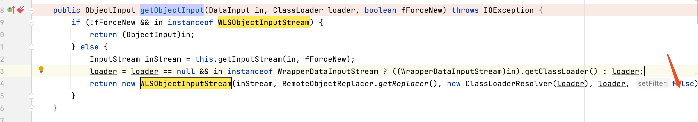
打补丁后：
这里this.setFilter默认为true，也就说从2021的某一次补丁之后fromBinary这个点加了黑名单已经打不了。
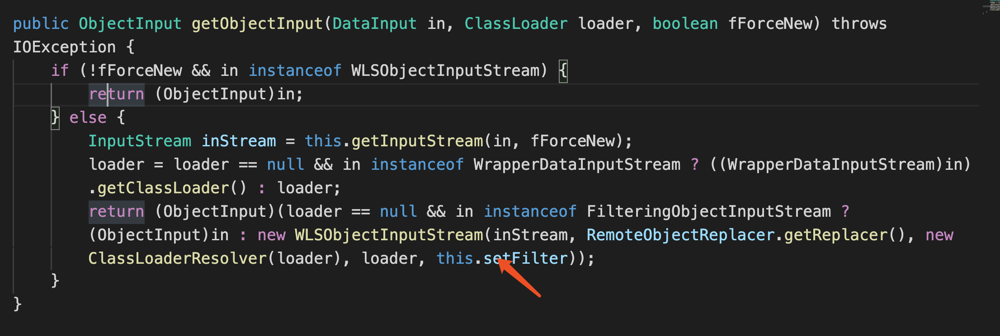
后记
虽然根据CVE-2016-3510，iiop和t3在漏洞利用上已经完全等价了。t3白不白已经不重要了，但t3白名单真的无法绕过吗？其实是可以的，但是这里空白太小写不下……